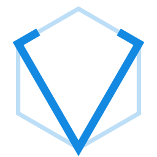

Dessin et FAO pour la gravure : on dessine, on prépare les parcours d'outil, on les voit et on les simule, de la plaque gravée au relief 3D. Logiciel libre, gratuit, sans installation.
Formes, textes et polices (TrueType, OpenType, polices monotrait de gravure), calques, accrochage aux nœuds et intersections, cotation, alignements, décalages et opérations booléennes.
DXF, SVG, PDF (lecture), IGES, STEP pour les pièces 3D, et les fichiers VND et SMB des logiciels de gravure courants, ouverts et enregistrés.
Contour, poche, gravure, V-carve, perçage, surfaçage, chanfrein, reprise de matière ; outils coniques, droits ou boule ; temps d'usinage estimé.
Ébauche, finition et reliefs sur un modèle 3D ; brut matière ; simulation 2D et 3D de l'enlèvement de matière avant d'usiner.
Préparation des marquages laser : remplissages, découpe en zones pour les grands dessins, repères de recalage.
Ce qui est propre à un atelier (post-processeurs et programmes machine, bibliothèques d'outils, gabarits, devis) s'ajoute par plugin : VectorDrive calcule, montre et simule les parcours ; le programme de votre machine est écrit par son plugin.
Version portable : un dossier à décompresser, rien à installer, les réglages restent à côté du programme (clé USB comprise).
Télécharger zip, environ 90 MoVectorDrive.exe dans le dossier VectorDrive.En préparation : une version pour Mac (Apple Silicon et Intel) est à l'essai. Elle apparaîtra ici dès qu'elle sera prête.
Apple Silicon M1, M2, M3… — zip Intel Mac Intel — zipVectorDrive.app dans Applications.Linux, Mac ou Windows, avec Python 3 (3.13 conseillé) :
git clone https://github.com/RomDuch12/VectorDrivepip install -r requirements.txtpython VectorDrive.pyToutes les versions et leurs notes : page des versions.
VectorDrive est un logiciel libre, sous double licence MIT ou Apache-2.0, au choix. Les composants tiers et leurs licences sont listés dans THIRD_PARTY_NOTICES.md. Il est fourni tel quel, sans garantie : vérifiez toujours un parcours en simulation avant d'usiner.
VectorDrive is free, open-source drawing and CAM software for engraving (milling and laser): draw, prepare
toolpaths, preview and simulate them, from engraved plates to 3D reliefs. Dual-licensed MIT or Apache-2.0. The
Windows build is portable (unzip and run VectorDrive.exe). Machine programs are written by
post-processor plugins. The interface is in French and English.